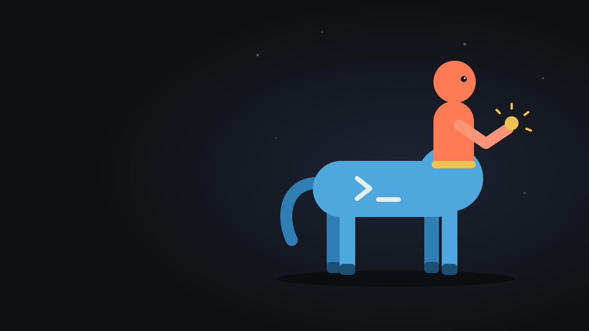

Trabajar como un centauro
Una charla sobre el trabajo de un ingeniero de reservorios cuando un agente de inteligencia artificial construye y la persona define y verifica.

-
Ver el deck
El deck
33 slides, una idea por slide. Se recorre con las flechas o deslizando.
-
Abrir el visor
Fortín de Piedra desde el espacio
El terreno baja donde hay pozos en producción. Radar Sentinel-1 de 2019 a 2026 y gas acumulado por pad del Capítulo IV, todo con datos públicos.
La coincidencia en el mapa deja sin probar el mecanismo: falta estimar presión y compactación, y no hay GNSS que valide la medida.
-
Abrir el visor
Norne: el agente propone hipótesis
Un agente hereda el modelo de simulación de Norne, propone hipótesis y las prueba contra la historia de producción con OPM Flow. Al final se destapan dos años que no vio.
El deck público de Norne viene sin presiones ni RFT observados, así que se ajusta el reparto de fases. El resultado no permite afirmar que el agente supere a un optimizador.